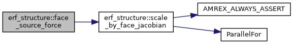
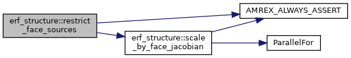
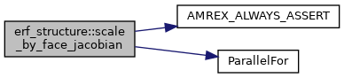
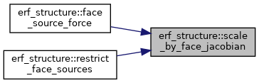

- Generated by
 1.9.1
1.9.1
|
ERF
Energy Research and Forecasting: An Atmospheric Modeling Code
|
Functions | |
| void | scale_by_face_jacobian (MultiFab &mf, int dir, const MultiFab &detJ, const Geometry &geom, bool divide) |
| void | restrict_face_sources (std::array< MultiFab, AMREX_SPACEDIM > &src, int L, int lev, const Vector< BoxArray > &grids, const Vector< DistributionMapping > &dmap, const Vector< Geometry > &geom, const Vector< IntVect > &ref_ratio, const Vector< const MultiFab * > &detJ) |
| std::array< Real, AMREX_SPACEDIM > | face_source_force (const std::array< MultiFab, AMREX_SPACEDIM > &src, const Geometry &geom, const MultiFab *detJ) |
| void | restrict_face_sources (std::array< amrex::MultiFab, AMREX_SPACEDIM > &src, int L, int lev, const amrex::Vector< amrex::BoxArray > &grids, const amrex::Vector< amrex::DistributionMapping > &dmap, const amrex::Vector< amrex::Geometry > &geom, const amrex::Vector< amrex::IntVect > &ref_ratio, const amrex::Vector< const amrex::MultiFab * > &detJ) |
| Restrict face-centred momentum sources from level L down to level lev < L. More... | |
| void | scale_by_face_jacobian (amrex::MultiFab &mf, int dir, const amrex::MultiFab &detJ, const amrex::Geometry &geom, bool divide) |
| Multiply (divide = false) or divide (divide = true) the valid faces normal to dir by the face Jacobian J_f described above. More... | |
| std::array< amrex::Real, AMREX_SPACEDIM > | face_source_force (const std::array< amrex::MultiFab, AMREX_SPACEDIM > &src, const amrex::Geometry &geom, const amrex::MultiFab *detJ) |
| The force [N] a face source puts on the air, per direction: the sum over the faces of the source times J_f dx dy dz, each face counted once. More... | |
| std::array<amrex::Real,AMREX_SPACEDIM> erf_structure::face_source_force | ( | const std::array< amrex::MultiFab, AMREX_SPACEDIM > & | src, |
| const amrex::Geometry & | geom, | ||
| const amrex::MultiFab * | detJ | ||
| ) |
The force [N] a face source puts on the air, per direction: the sum over the faces of the source times J_f dx dy dz, each face counted once.
src[d] holds the source on the faces normal to d of detJ's boxes (no ghost faces needed); detJ is nullptr on a uniform-dz mesh (J_f = 1). Reduces over the ranks.
| std::array<Real,AMREX_SPACEDIM> erf_structure::face_source_force | ( | const std::array< MultiFab, AMREX_SPACEDIM > & | src, |
| const Geometry & | geom, | ||
| const MultiFab * | detJ | ||
| ) |

| void erf_structure::restrict_face_sources | ( | std::array< amrex::MultiFab, AMREX_SPACEDIM > & | src, |
| int | L, | ||
| int | lev, | ||
| const amrex::Vector< amrex::BoxArray > & | grids, | ||
| const amrex::Vector< amrex::DistributionMapping > & | dmap, | ||
| const amrex::Vector< amrex::Geometry > & | geom, | ||
| const amrex::Vector< amrex::IntVect > & | ref_ratio, | ||
| const amrex::Vector< const amrex::MultiFab * > & | detJ | ||
| ) |
Restrict face-centred momentum sources from level L down to level lev < L.
src holds the source [N/m^3] on the faces of grids[L] (x, y, z faces; it may have ghost faces). On return it holds the source on the faces of grids[lev], without ghost faces, zero away from the region level L covers.
The force on a face is the source times the face's control volume, J_f dx dy dz, with J_f the mesh Jacobian on the face (the mean of detJ in the two cells beside it, the one cell inside the domain on a non-periodic domain face). The restriction goes down one level at a time: coarse face I takes the forces of the fine faces r I + m, |m| < r, along the face normal with the weights (r - |m|) / r, and of every fine face across it. Each fine force is shared out with weights that add up to 1, so the total force is kept exactly, also when the fine level is split into boxes or crosses a periodic boundary. On a non-periodic domain face, where the boundary condition sets the momentum, a fine face inside the domain gives its whole force to the first coarse face inside, so the force on the faces inside the domain is kept too. The coarse source is the coarse force divided by the coarse face's control volume.
detJ[l] is detJ_cc of level l, with one ghost cell filled, on a stretched or terrain-following mesh, and nullptr on a uniform-dz mesh (J_f = 1 there, and no Jacobian is applied).
| void erf_structure::restrict_face_sources | ( | std::array< MultiFab, AMREX_SPACEDIM > & | src, |
| int | L, | ||
| int | lev, | ||
| const Vector< BoxArray > & | grids, | ||
| const Vector< DistributionMapping > & | dmap, | ||
| const Vector< Geometry > & | geom, | ||
| const Vector< IntVect > & | ref_ratio, | ||
| const Vector< const MultiFab * > & | detJ | ||
| ) |

| void erf_structure::scale_by_face_jacobian | ( | amrex::MultiFab & | mf, |
| int | dir, | ||
| const amrex::MultiFab & | detJ, | ||
| const amrex::Geometry & | geom, | ||
| bool | divide | ||
| ) |
Multiply (divide = false) or divide (divide = true) the valid faces normal to dir by the face Jacobian J_f described above.
mf lives on the faces of detJ's boxes, with detJ's distribution.
| void erf_structure::scale_by_face_jacobian | ( | MultiFab & | mf, |
| int | dir, | ||
| const MultiFab & | detJ, | ||
| const Geometry & | geom, | ||
| bool | divide | ||
| ) |
Referenced by face_source_force(), and restrict_face_sources().

